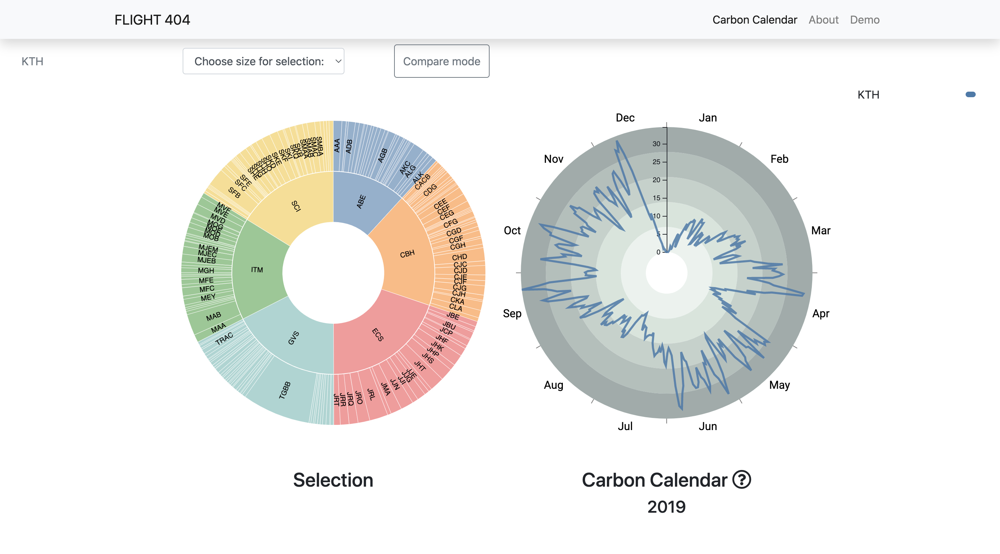

Flight 404
As part of a course in Information Visualization, we collaborated with the FLIGHT research team to visualize KTH aviation-related carbon emissions throughout a calendar year. The visualization consists of a selection wheel (left) and a carbon calendar (right). The visualization website is developed with HTML, CSS, JavaScript, and D3.js.
How to use
The Selection wheel on the left allows navigation through the levels of the KTH hierarchy (i.e. university, schools, departments, individual staff). By toggling the "Compare mode "button, users can select and compare carbon emission patterns between constituents on the same level (up to 5 entities). By switching options in "Change size for selection", sections of the wheel can be proportioned based on the amount of carbon emission for the year, but also the number of employees, number of flights, and distance traveled.
What is carbon calendar
The data used in the visualization was gathered by the travel agency that KTH uses and consists of the flights booked by KTH staff in 2019 for business purposes. We processed data and calculated the tonnes of CO2 emitted per day for individual trips (i.e. the date of departure from Stockholm, Sweden until the date of return). The values are divided by the durations of the trips and then aggregated into data points of tonnes of CO2 per day. The resulting calculations are mapped to the Carbon Calendar, which wraps the time series around a circle instead of a typical horizontal display. Since the metric is calculated by dividing the total amount of carbon emitted during a trip by the total duration of that trip, users can identify carbon “inefficiencies” (e.g. a long-distance trip that only lasted a day or two).
Video Demo
Contribution
This is a group project I cooperated with six other KTH students. In this project, I mainly contributed to UX design, front-end development, and demo video editing.